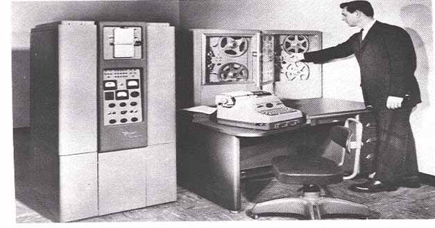

|  |
A transistor computer, now often called a second generation computer, is a computer which uses discrete transistors instead of vacuum tubes. The first generation of electronic computers used vacuum tubes, which generated large amounts of heat, were bulky and unreliable. A second generation of computers, through the late 1950s and 1960s featured circuit boards filled with individual transistors and magnetic core memory. These machines remained the mainstream design into the late 1960s, when integrated circuits started appearing and led to the third generation computer.
The University of Manchester's experimental Transistor Computer was first operational in November 1953 and it is widely believed to be the first transistor computer to come into operation anywhere in the world. There were two versions of the Transistor Computer, the prototype, operational in 1953, and the full-size version, commissioned in April 1955.The 1953 machine had 92 point-contact transistors and 550 diodes, manufactured by STC. It had a 48-bit machine word. The 1955 machine had a total of 200 point-contact transistors and 1300 point diodes, which resulted in a power consumption of 150 watts. There were considerable reliability problems with the early batches of transistors and the average error-free run in 1955 was only 1.5 hours. The Computer also used a small number of tubes in its clock generator, so it was not the first fully transistorized machineThe design of a full-size Transistor Computer was subsequently adopted by the Manchester firm of Metropolitan-Vickers, who changed all the circuits to use more reliable junction transistors. The production version was known as the Metrovick 950 and was built from 1956 to the extent of six[3] or seven machines, which were "used commercially within the company" or "mainly for internal use".
IBM, which dominated the data processing industry through most of the 20th century, introduced its first commercial transistorized computers beginning in 1958, with the IBM 7070, a ten-digit-word decimal machineIt was followed in 1959 by the IBM 7090, a 36-bit scientific machine, the highly popular IBM 1401 designed to replace punched card tabulating machines, and the desk-sized 1620, a variable length decimal machine. IBM's 7000 and 1400 series included many variants on these designs, with different data formats, instruction sets and even different character encodings, but all were built using the same series of electronics modules, the IBM Standard Modular System (SMS).